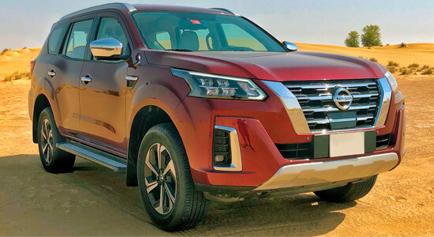

Внедоро́жник — автомобиль, обладающий повышенной проходимостью по бездорожью за счёт большого клиренса, ведущих передних и задних колёc.
Название „Джип“ появилось в годы Второй мировой войны как прозвище лёгких многоцелевых военных автомобилей „Виллис-МВ“ (Willys) и однотипных с ними машин „Форд GPW“ (Ford). В послевоенные годы оно стало торговой маркой новых поколений гражданских и армейских машин фирмы „Виллис“ из Толидо, официально зарегистрированной 30 июня 1950 г.
